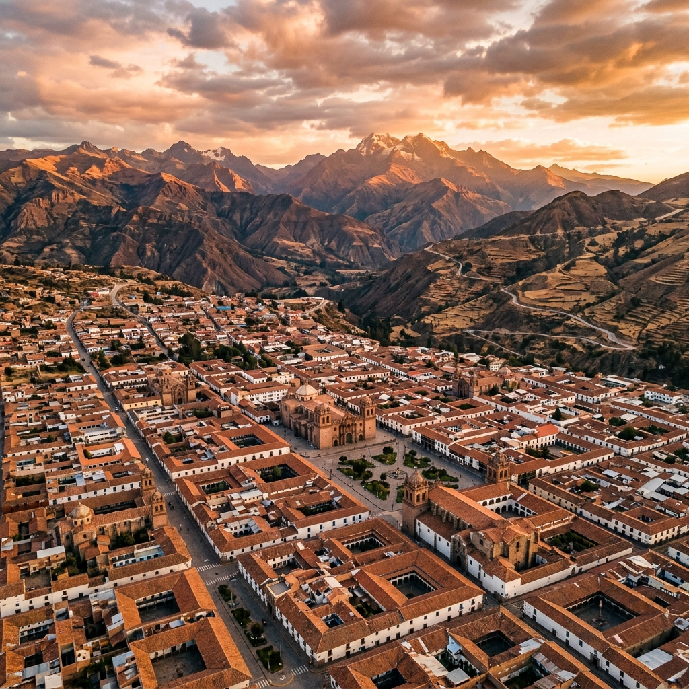
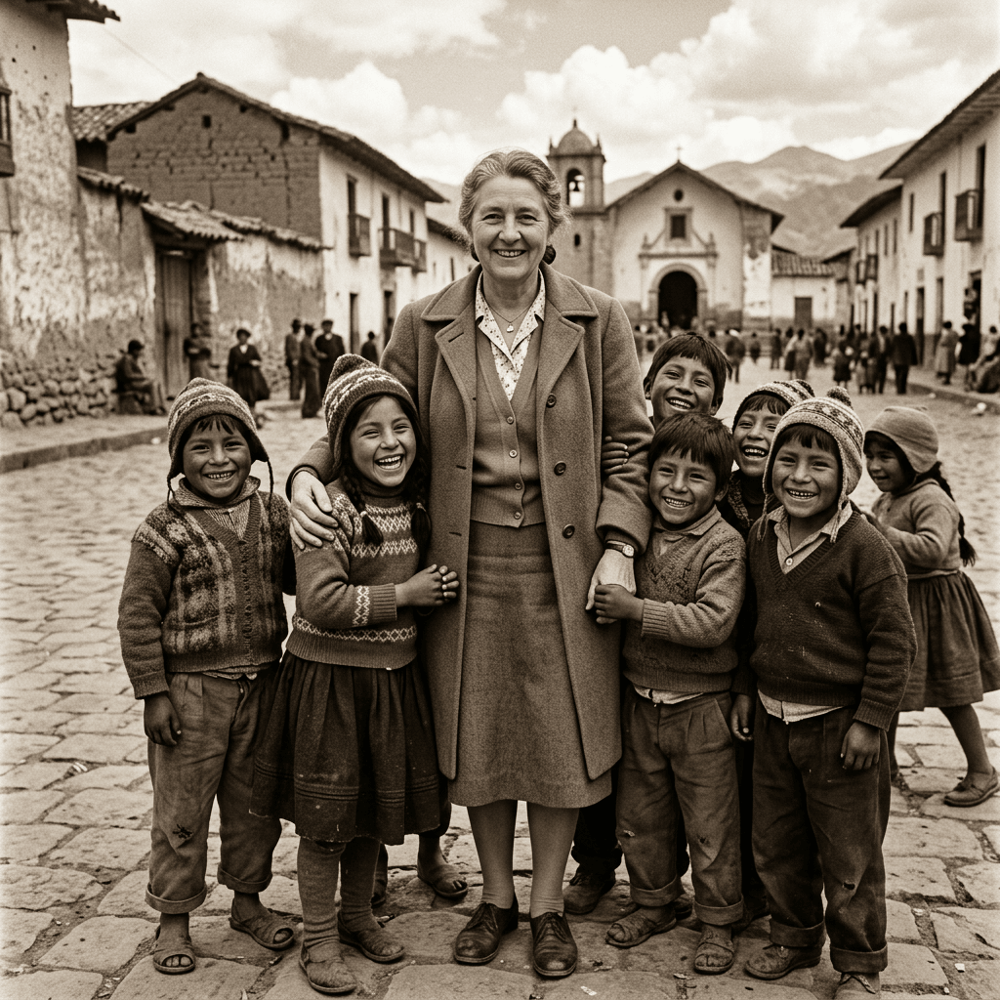

Nuestra Historia
Desde los Andes peruanos, construyendo puentes entre la vulnerabilidad y la profesionalización.

Una convicción que cambió todo
Mama Alice nació de la convicción de que ningún joven debería ver limitado su futuro por su lugar de nacimiento. En un contexto donde el conflicto armado dejó cicatrices profundas, nuestra fundadora decidió actuar.
Hoy somos un ecosistema integral que abarca la salud emocional, la educación básica y la formación técnica, con resultados medibles que hablan por sí solos.
Lo que nos guía cada día
Tres principios que definen cómo trabajamos y cómo acompañamos a cada joven en su proceso.
Empatía
Cada joven es escuchado, comprendido y acompañado desde su realidad personal, sin juicios.
Transparencia
Cada recurso se audita y se reporta. Nuestros donantes son nuestros socios en la misión.
Sostenibilidad
No creamos dependencia. Formamos para la autonomía profesional y la independencia plena.
Nuestra trayectoria
Más de una década construyendo futuro en Ayacucho.
Fundación
Se establece Mama Alice como proyecto de asistencia social en las comunidades rurales de Ayacucho.
Primer Centro Comunitario
Se inaugura el primer centro de soporte psicosocial y refuerzo escolar para 120 niños.
Hospitality Training Center
Nace el centro de formación técnica en gastronomía y hotelería, con alianzas con el sector turístico.
85% de Inserción Laboral
Se alcanza la tasa de inserción laboral más alta entre las ONGs de formación técnica en la región.
2,500 Jóvenes Capacitados
Se supera el hito de dos mil quinientos jóvenes formados y acompañados integralmente.
Las personas detrás del cambio
Líderes comprometidos con el desarrollo integral de Ayacucho.
Directora General
Fundadora y líder estratégica
Coord. Educativa
Programas comunitarios
Director HTC
Hospitality Training Center
Psicóloga Principal
Soporte psicosocial
¿Quieres formar parte del cambio?
Conoce nuestras oportunidades de voluntariado, donación o alianza empresarial.